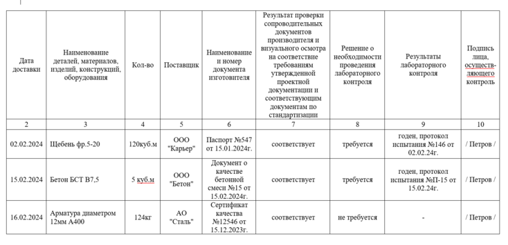

Как работать с изменениями по разным видам стройконтроля
Входной контроль
Стройконтроль осуществляет два вида входного контроля:
- контроль рабочей документации;
- контроль материалов.
Основные функции по ведению входного контроля ПД и РД и их соответствия действующим нормативам возлагаются на СК заказчика, а за входной контроль материалов, изделий, оборудования в первую очередь отвечает СК подрядчика.
При входном контроле рабочей документации СК заказчика проверяет соблюдение следующих требований.
Если специалист нашел несоответствия, то он оформит ведомость и вернет документацию проектировщику для устранения замечаний.
Представитель СК подрядчика, в свою очередь, отвечает за соответствие организационно-технологических решений возможностям подрядной организации, а также за соответствие строительных материалов, изделий, конструкций и оборудования согласованной проектной документации и соответствия их сопроводительным документам (паспортам, сертификатам и т. п.). Именно СК подрядчика отвечает за внесение данных в Журнал входного контроля.

Теперь проверим, хорошо ли вы разбираетесь в изменениях, которые касаются входного контроля. Прочитайте утверждение и определите, верное оно или ложное.
Карточки для самопроверки
Данные исходных карточек. Здесь ответы не проверяются.
1. При входном контроле стройматериалов и изделий представитель СК подрядчика, а затем СК заказчика проверяют наличие сопроводительных документов
- Правда
- Ложь
Ответ и пояснение, помеченные в источнике
Правда
При входном контроле стройматериалов и изделий представитель СК подрядчика, а затем СК заказчика проверяют наличие сопроводительных документов
2. Основные функции по ведению входного контроля ПД и РД и их соответствия действующим нормативам возлагаются на СК подрядчика
- Правда
- Ложь
Ответ и пояснение, помеченные в источнике
Ложь
Основные функции по ведению входного контроля ПД и РД и их соответствия действующим нормативам возлагаются на СК заказчика

Источник и ограничения. Статическое содержание не проверяет ответы и не воспроизводит анимацию.
Операционный контроль
Операционный контроль – это проверка выполнения хода и технологии строительно-монтажных работ. Он служит для выявления дефектов и причин их возникновения, а также нацелен на реализацию мер по их устранению и предупреждению.
В новом СП 543.1325800.2024 впервые унифицировали перечень контролируемых операций по видам работ в единой таблице. Документ включает виды работ, контролируемые операции и метод контроля (приложение Г СП 543.1325800.2024).

Операционный контроль поможет избежать серьезных нарушений и минимизировать исправление дефектов и недостатков в ходе СМР. Возьмите в работу памятку, которая поможет держать все требования к операционному контролю под рукой.
Теперь проверим, хорошо ли вы разбираетесь в изменениях, которые касаются операционного контроля. Прочитайте утверждение и определите, верное оно или ложное.
Карточки для самопроверки
Данные исходных карточек. Здесь ответы не проверяются.
1. Результаты операционного контроля должны быть отражены в общем и специальных журналах работ.
- Правда
- Ложь
Ответ и пояснение, помеченные в источнике
Правда
Результаты операционного контроля должны быть отражены в общем и специальных журналах работ.
2. Операционный контроль – это контроль результатов выполнения отдельных этапов работ, конструкций, участков сетей инженерно-технического обеспечения
- Правда
- Ложь
Ответ и пояснение, помеченные в источнике
Ложь
Операционный контроль – это проверка выполнения хода и технологии строительно-монтажных работ.

Источник и ограничения. Статическое содержание не проверяет ответы и не воспроизводит анимацию.
Приемочный контроль
Приемочный контроль – это контроль результатов выполнения отдельных видов, этапов работ, конструкций, участков сетей инженерно-технического обеспечения, в том числе влияющих на безопасность ОКС. Результаты работ проверяют на предмет соответствия требованиям проектной и рабочей документации, стандартов, других нормативных документов.
В процессе строительства проводят оценку качества скрытых работ. Это работы, которые в соответствии с технологией становятся недоступными для контроля после начала выполнения последующих работ. Контроль результатов скрытых работ проводят исключительно до начала следующих работ.
Прочие работы, результаты которых не скрываются последующими, не относятся к ответственным конструкциям, участкам сетей инженерно-технического обеспечения, освидетельствуют и оформляют актом. Такой акт составляется в произвольной форме, согласованной участниками приемочного процесса.
В приложении В нового СП 543.1325800.2024 Минстрой впервые приводит единый перечень исполнительной документации по видам работ. Он остался стандартным, но состав документации распределили по этапам работ: входной контроль, операционный контроль и приемочный контроль. То есть для каждого этапа регламентировали свой состав исполнительной документации.
Исполнительная документация – это отражение фактического исполнения проекта, состояния объекта и его элемента.
Новый Свод правил остается рекомендательным документом. Если у заказчика есть свой регламент с перечнем ИД и на него есть ссылка в договоре строительного подряда, то список ИД для конкретного ОКС может быть более расширенным.
Подрядчику выгодно согласовать конкретный перечень ИД и порядок ведения стройконтроля в договоре с заказчиком
Ведущий инженер строительного контроля АО «ЛЭСР»
Порядок ведения СК и перечень ИД стороны регламентируют договором. Этот вопрос нужно согласовать с участниками строительного процесса до начала работ.
Даже если вы включите в договор формулировку «Действующие нормативные документы», то это защитит подрядчика от необоснованных и расширяющих нормативы требований СК. При этом конкретный перечень ИД лучше сформировать при заключении договора. Это также позволит подстраховать интересы подрядчика, так как у заказчика не будет правовых оснований для запроса дополнительной ИД.
Аргументы для спорных ситуаций по новому СП. Эксперты Системы подготовили аргументы для подрядчика, которые помогут противостоять неправомерным требованиям СК заказчика, с учетом правил нового СП. Кликайте на карточку ниже, чтобы увидеть ответ подрядчика.